Fermer
✕
Art contemporain africain
Twagirumukiza
Sculptures murales en bois taillé et plâtre — une exploration des formes ancestrales, des motifs géométriques et de la figure humaine sublimée. Une œuvre entre mémoire collective et langage universel.
Découvrir les œuvres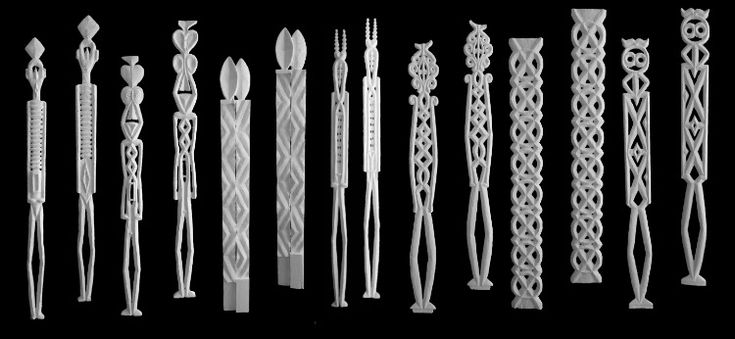
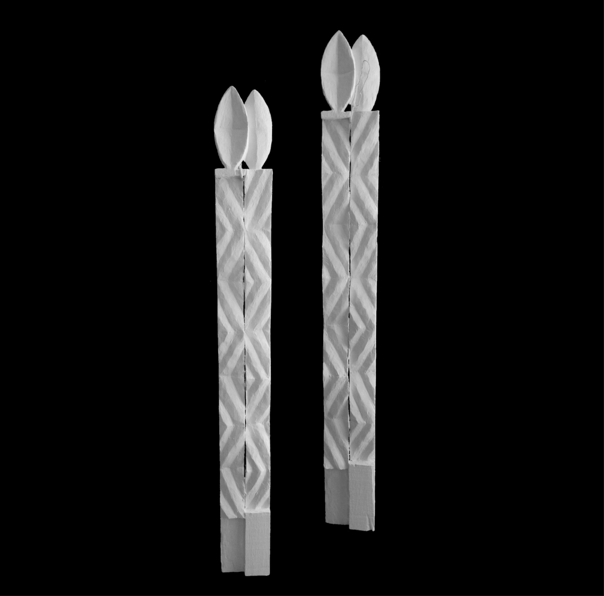
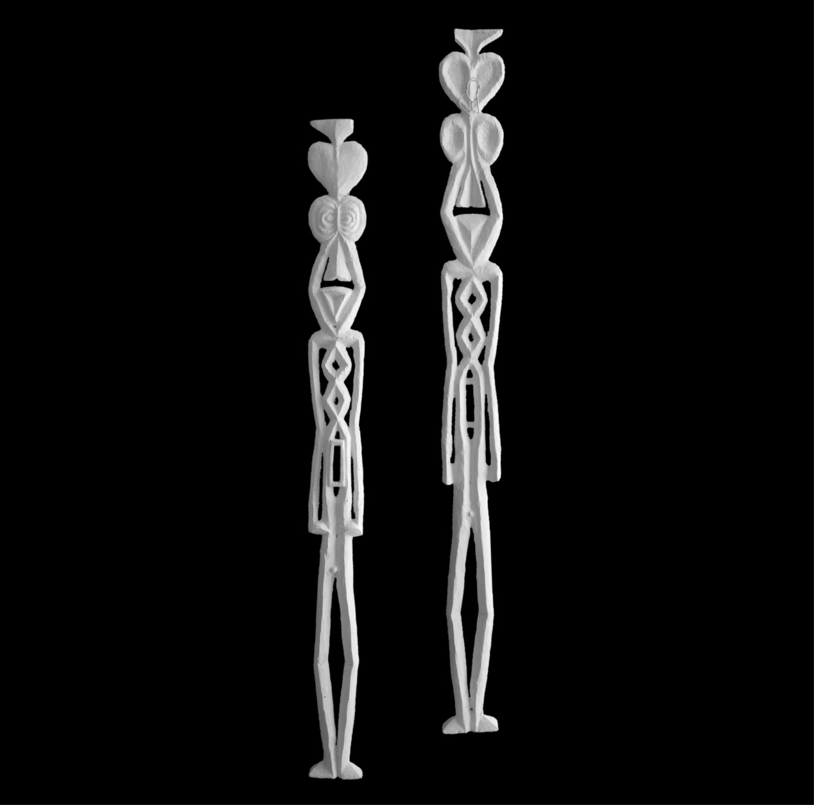
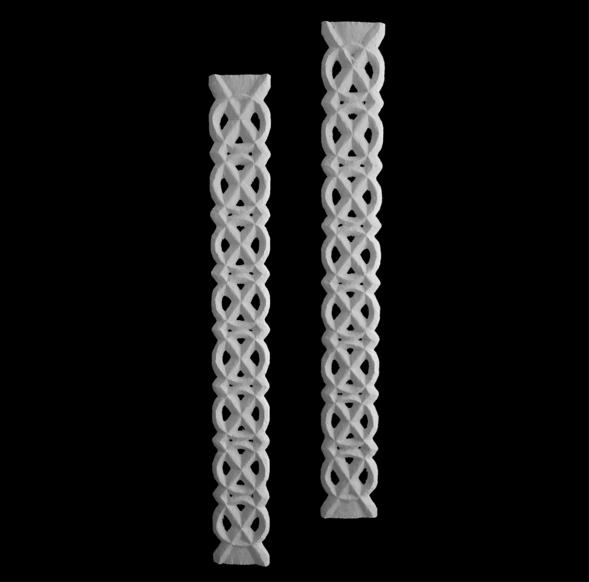
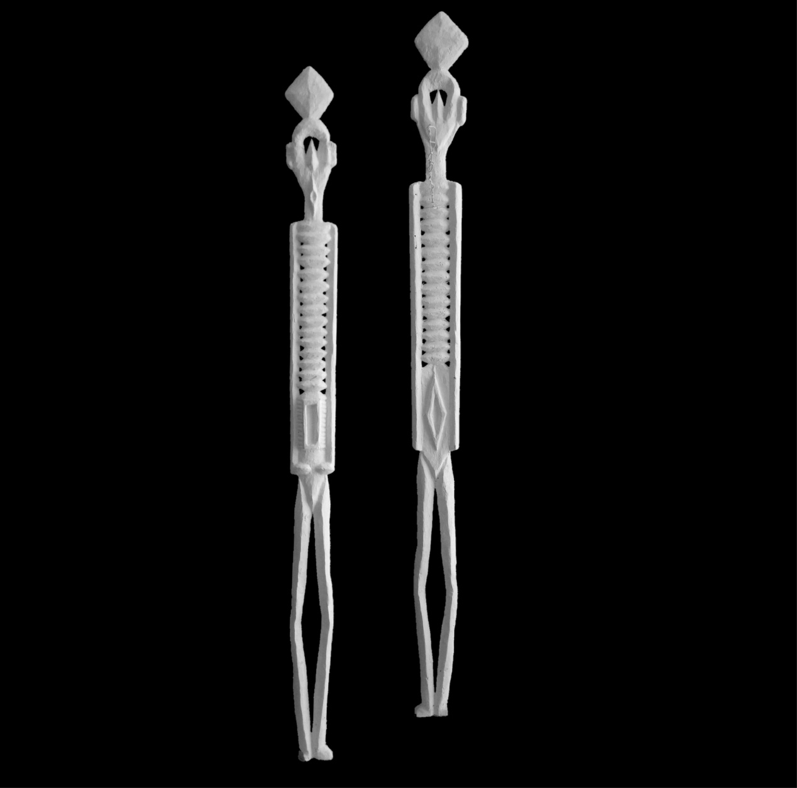
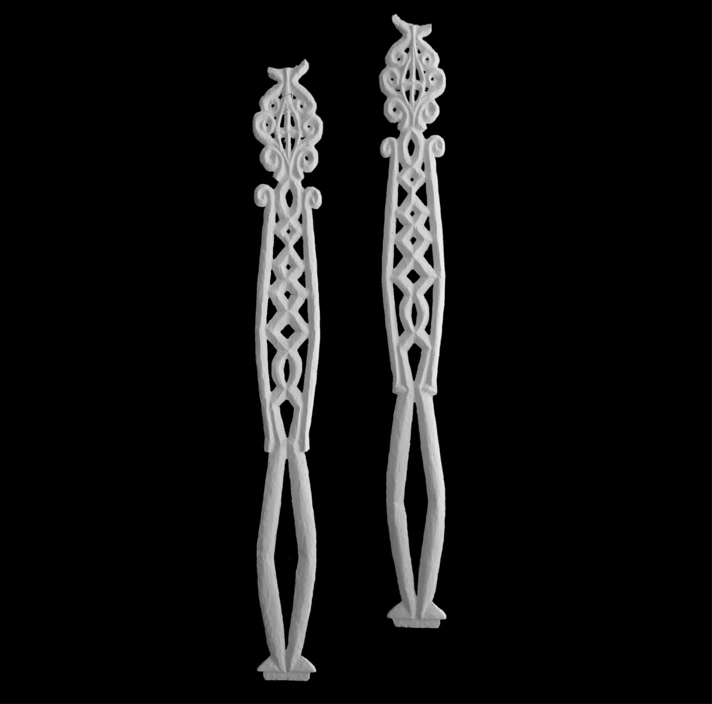
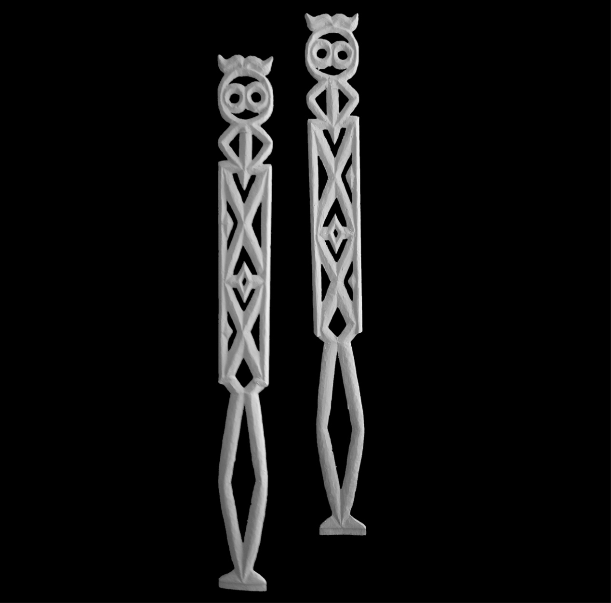
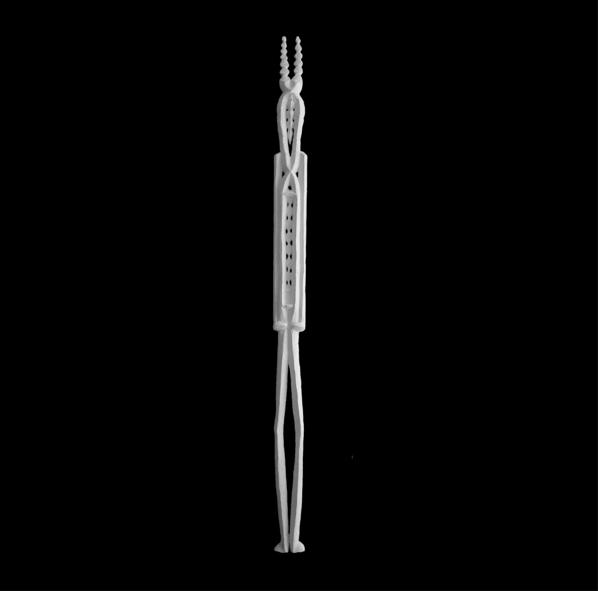
Chaque pièce est un dialogue entre la matière et le signe — entre la verticalité du totem et la richesse des motifs hérités d'une tradition visuelle profonde. Bois, plâtre, pigment.
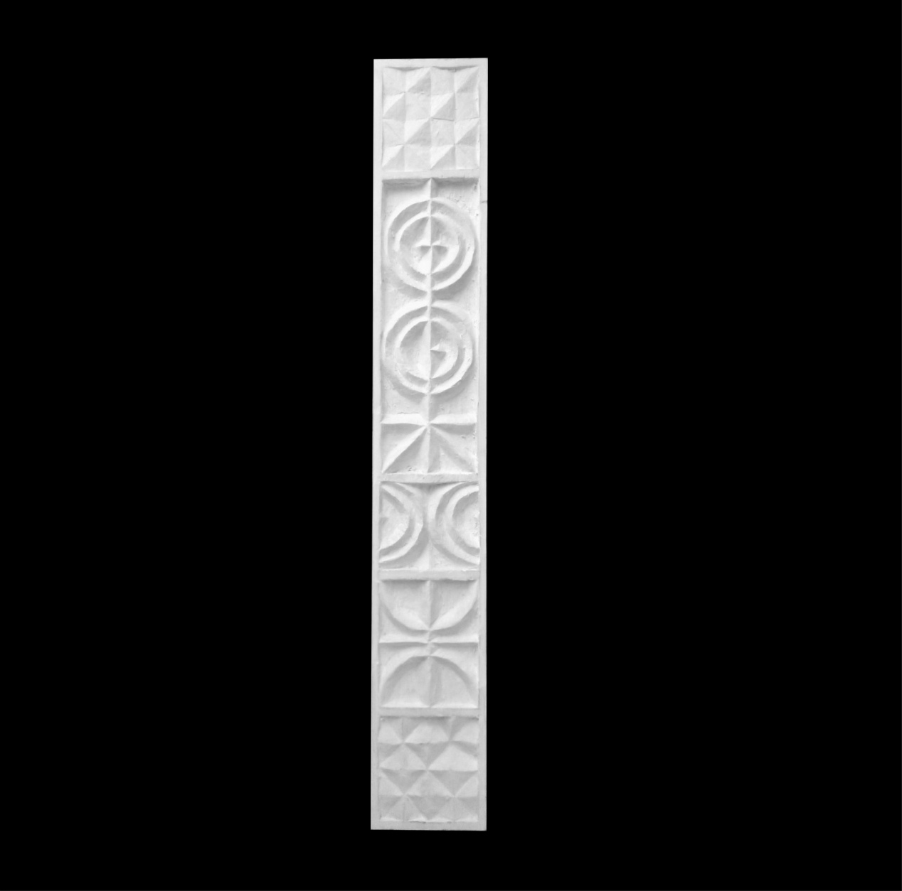
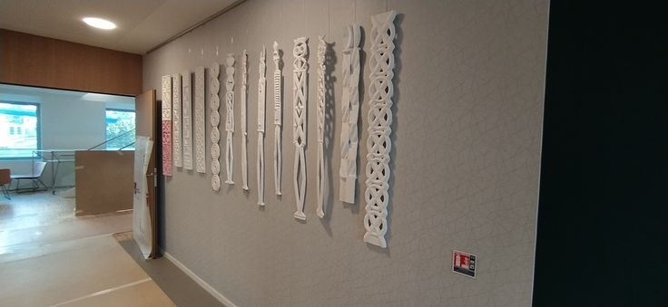
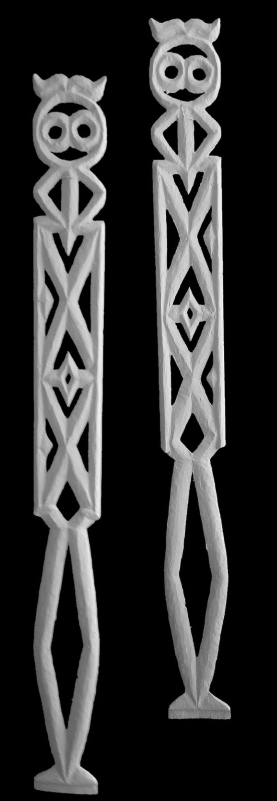
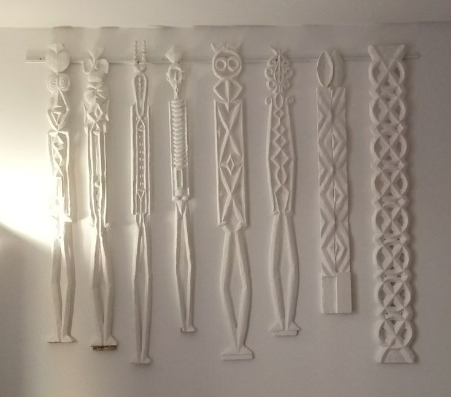
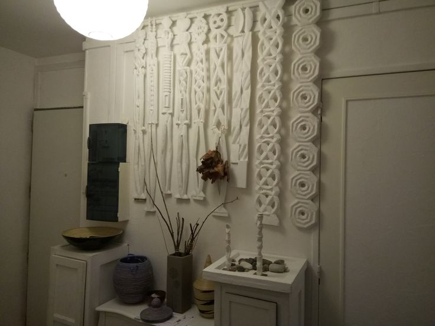
Série Figures — Pièce principale
Deux figures anthropomorphes se font face, sculptées dans une blancheur totale. Le cœur stylisé au sommet — symbole d'amour, d'âme, de protection — domine un corps ajouré dont les motifs géométriques évoquent le tressage, la vie, l'entrelacement des êtres. Pièce emblématique de la série Totems.
Sculpteur et plasticien, Twagirumukiza Innocent développe depuis plusieurs années une œuvre singulière fondée sur l'exploration des formes totémiques. À travers la série Totems, il convoque la verticalité comme langage — chaque pièce est un axe entre la terre et le ciel, entre le corps et le cosmos.
Ses sculptures murales mêlent motifs géométriques d'origine traditionnelle africaine — losanges, entrelacs, spirales, rosaces — à une figuration épurée qui emprunte autant à l'abstraction qu'à la statuaire ancestrale. Le blanc omniprésent n'est pas une absence de couleur : c'est une lumière intérieure, un choix radical de mise en forme.
Les œuvres ont été exposées dans plusieurs espaces, des galeries aux couloirs institutionnels, créant à chaque fois un dialogue entre architecture et sculpture, entre le mur et le corps érigé.